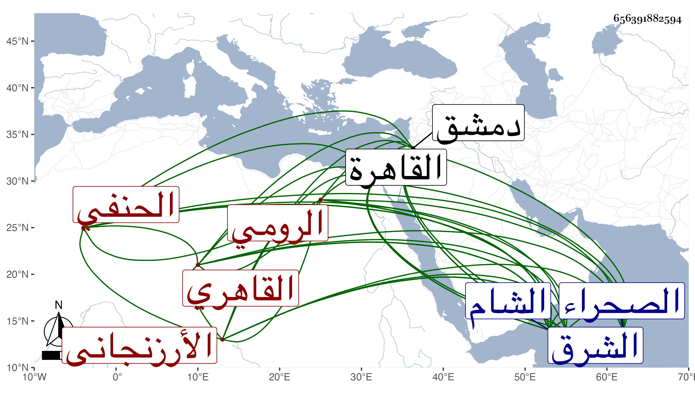

0902Sakhawi.DawLamic.ITO20230111-ara1.EIS1600.656391882594
Biography ID: 656391882594
1169
يوسف بن أحمد الأرزنجاني الرومي القاهري الحنفي نزيل الصحراء ويعرف بسنان سمع معنا على شيخنا في مسند أبي يعلى ثم قرأ علي بعد دهر مجالس من البخاري بحثا واستفادة ، وسافر لدمشق ثم قدم القاهرة للسعي في شيء من وظائف الشام فنزل بزاوية نصر الله من خان الخليلي وأقرأ بها في المتوسط وغيره وطلع إلى السلطان فلم يكرمه بل لامه على الطلوع ويقال أنه أظهر مطالعة من ملك الشرق نسب إلى التزيد فيها وربما ظن أنه جاسوس . وأقبل عليه الكافياجي وأنزله تحت نظره بالتربة الأشرفية ثم بالشيخونية وصار يقرئ فيها وسافر لبيت المقدس والشام ثم عاد بسبب الخاتونية فأجيب وحينئذ أنزله الدوادار بتربته وقرره شيخا بها ولقيته هناك فسألته عن واقعة جرت له مع البقاعي بالشام وبالغ معي في الأدب وصار يحضر مجلس السلطان . ومات في منتصف المحرم سنة ست وتسعين فجأة رحمه الله وإيانا .
